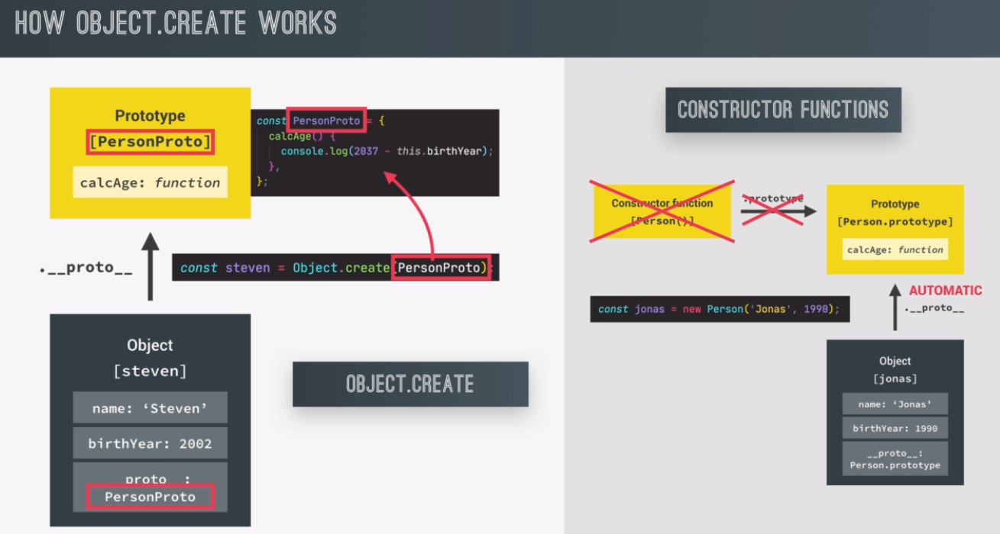

with Object.create, there is still the idea of prototypal inheritance. However, there are no prototype properties involved. And also no constructor functions, and no new operator.
we can use Object.create to essentially manually set the prototype of an object, to any other object that we want.
the big takeaway is that Object.create creates a new object, and the prototype of that object will be the object that we passed in.
PersonProto will be the prototype of all the person objects.
Then create a person object with this object here as the prototype. This will now return a brand new object, that is linked to the prototype that we passed using personProto.
Steven here is right now an empty object. And it will be linked to this PersonProto object, which will be its prototype.
const PersonProto = {
calcAge() {
console.log(2037 - this.birthYear);
}
}
const steven = Object.create(personProto)
steven.name = 'Steven'
steven.birthYear = 2002
steven.calcAge()
here at the right side, we have the way it works where de constructor functions, just as we have been doing it up until this point.
when we use the new operator in constructor functions or classes, it automatically sets the prototype of the instances to the constructors, prototype property.
with Object.create, we can set the prototype of objects manually to any object that we want.
in this case, we manually set the prototype of the Steven object to the person proto object.
Now the two objects are effectively linked through the proto property, just like before. So now looking at properties, or methods in a prototype chain, works just like it worked in function constructors, or classes.
the prototype chain, in fact, looks exactly the same here. The big difference is that we didn't need any constructor function, and also no prototype property at all, to achieve the exact same thing.
this is actually a bit more straightforward, and a bit more natural. And I guess, that it might also be easier to understand. However, the reason why I'm showing you this Object.create technique, right at the end, is because in practice, in the real world, this is actually the least used way of implementing prototypal inheritance.
This uses a function to add the properties.
this looks a bit like the constructor function that we created earlier. However, this has actually nothing to do with any constructor function, because we are not using the new operator to call this we will simply do Sarah.init and then we will pass in the arguments.
this keyword will of course, also points to the Sarah object now, but it does so because we explicitly called init on Sarah. So again, this has nothing to do with constructor functions that we saw earlier. And it's also completely different from the constructor method that we have in ESX classes.
const PersonProto = {
calcAge() {
console.log(2037 - this.birthYear);
},
init(firstName, birthYear) {
this.firstName = firstName;
this.birthYear = birthYear;
},
}
const sarah = Object.create(PersonProto);
sarah.init('Sarah', 1979)
sarah.calcAge()